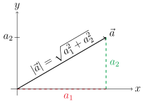
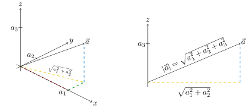

Table of Contents
Miscellaneous Topics

NARROW DISPLAY WARNING
You are most likely using a tablet or mobile device in portrait orientation. This website is best viewed using a typical computer screen with the browser window maximized.
Viewing this website in portrait orientation can cause problems with equations being longer than the screen width (you can scroll to the right), images being poorly sized, and the font size of maths text being much smaller than regular text. If your only option is a tablet or mobile device, your viewing experience will be better if you view this website in landscape orientation. You might need to refresh the page to fix any problems after rotating.
In maths, a vector can be thought of geometrically as an arrow, which has a magnitude, or length, and direction. They are used in multivariable calculus and extensively in physics, such as electromagnetic fields, gravitational fields, and fluid flow.
Vectors are usually written as a letter with a little arrow over it. The individual components of the vector are usually the same letter but without an arrow and a subscript numbering the components. Ways to write out the individual components are between angle brackets, as a column vector, and not as commonly as with the $\vec{i}$, $\vec{j}$, and $\vec{k}$ vectors.
In two dimensional space,
\begin{equation} \vec{a} = \langle a_{1},a_{2} \rangle = \begin{bmatrix} a_{1} \\ a_{2} \end{bmatrix} = a_{1}\vec{i} + a_{2}\vec{j} \end{equation} \begin{equation} \vec{i} = \langle 1,0 \rangle = \begin{bmatrix} 1 \\ 0 \end{bmatrix} \qquad \vec{j} = \langle 0,1 \rangle = \begin{bmatrix} 0 \\ 1 \end{bmatrix} \end{equation}In three dimensional space,
\begin{equation} \vec{a} = \langle a_{1},a_{2},a_{3} \rangle = \begin{bmatrix} a_{1} \\ a_{2} \\ a_{3} \end{bmatrix} = a_{1}\vec{i} + a_{2}\vec{j} + a_{3}\vec{k} \end{equation} \begin{equation} \vec{i} = \langle 1,0,0 \rangle = \begin{bmatrix} 1 \\ 0 \\ 0 \end{bmatrix} \qquad \vec{j} = \langle 0,1,0 \rangle = \begin{bmatrix} 0 \\ 1 \\ 0 \end{bmatrix} \qquad \vec{k} = \langle 0,0,1 \rangle = \begin{bmatrix} 0 \\ 0 \\ 1 \end{bmatrix} \end{equation}Vectors can be multiplied by scalars, which are just regular number. A scalar $c$ multiplying a vector $\vec{a}$ multiplies each of the components of $\vec{a}$.
\begin{equation} c \vec{a} = \langle ca_{1},ca_{2} \rangle = \begin{bmatrix} ca_{1} \\ ca_{2} \end{bmatrix} \qquad c \vec{a} = \langle ca_{1},ca_{2},ca_{3} \rangle = \begin{bmatrix} ca_{1} \\ ca_{2} \\ ca_{3} \end{bmatrix} \end{equation}Vectors can be added each other to create another vector.
\begin{equation} \vec{a} + \vec{b} = \langle a_{1}+b_{1},a_{2}+b_{2} \rangle = \begin{bmatrix} a_{1}+b_{1} \\ a_{2}+b_{2} \end{bmatrix} \end{equation} \begin{equation} \vec{a} + \vec{b} = \langle a_{1}+b_{1},a_{2}+b_{2},a_{3}+b_{3} \rangle = \begin{bmatrix} a_{1}+b_{1} \\ a_{2}+b_{2} \\ a_{3}+b_{3} \end{bmatrix} \end{equation}The magnitude of a vector is just the length of the vector using the Pythagorean theorem in two dimensional space. The magnitude is commonly denoted by vertical bars, but there are many notations.
In three dimensional space, the magnitude is still determined by the Pythagorean theorem but requires two steps. In the following diagram, the length of the components in the $xy$-plane is computer first, which is used as the length of the base of a right triangle with height $a_{3}$.
\begin{equation} |\vec{a}| = \sqrt{\left(\sqrt{a_{1}^{2}+a_{2}^{2}}\right)^{2} + a_{3}^{2}} = \sqrt{a_{1}^{2}+a_{2}^{2} + a_{3}^{2}} \end{equation} 